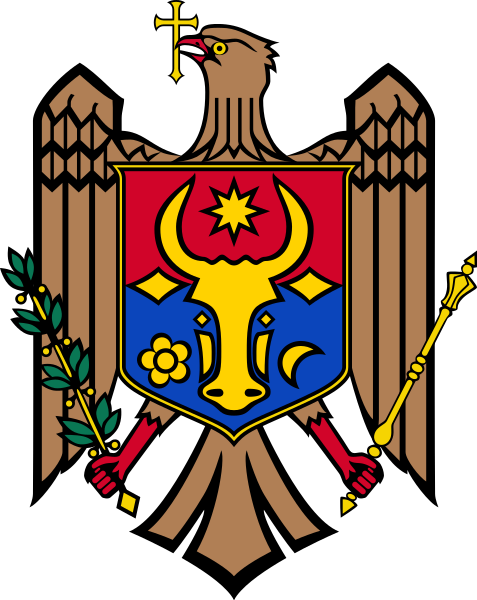

Moldova
Republica Moldova este un stat situat în sud-estul și estul Europei. Se învecinează cu România la vest și cu Ucraina la nord, est și sud. Republica Moldova este un stat fără ieșire directă la mare, însă are ieșire la Dunăre pe o fâșie de 430 de metri
Doriți să vizitați Moldova? Câteva destinații interesante sunt:
- Rezervația "Codru"
- Orheiul Vechi
- Cetatea Soroca
- Mănăstirea Căpriana
- Castel Mimi
 |
Norvegia
Norvegia este o țară scandinavă care cuprinde munți, ghețari și fiorduri adânci de coastă. Oslo, capitala, este un oraș al spațiilor verzi și al muzeelor. Nave vikinge din secolul al IX-lea, bine conservate, sunt expuse la Muzeul Navelor Vikinge din Oslo.
Activități din Norvegia:
- Schi, sporturi de iarnă
- Croazieră pe fiorduri
- Observarea aurorei boreale
- Observarea balenelor
- Schi și sporturi de iarnă
Suedia
Cea mai mare țară din Scandinavia, cunoscută pentru orașele sale moderne precum Stockholm, pentru designul funcțional (IKEA) și pentru contribuțiile culturale precum muzica ABBA. Suedia îmbină un stil de viață urban avansat cu vaste întinderi de natură sălbatică — păduri, lacuri și coastă.
Activități din Suedia:
- Stockholm
- Capitala Suediei, renumită pentru centrul vechi Gamla Stan și numeroasele sale atracții.
- IKEA
- Brand suedez de mobilier, fondat în orașul Älmhult, unde există și un muzeu dedicat companiei.
- Volvo
- Companie auto suedeză cunoscută în întreaga lume, cu un muzeu dedicat în orașul Göteborg.
- ABBA
- Celebrul grup suedez de muzică pop, prezentat într-un muzeu interactiv din Stockholm.
- Muzeul Vasa
- Muzeu din Stockholm care adăpostește vasul de război Vasa, scufundat în anul 1628.